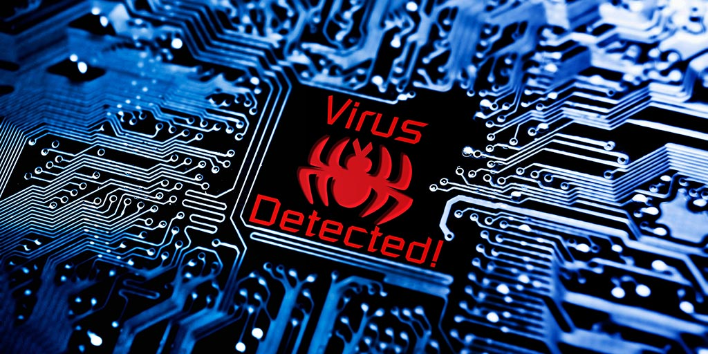
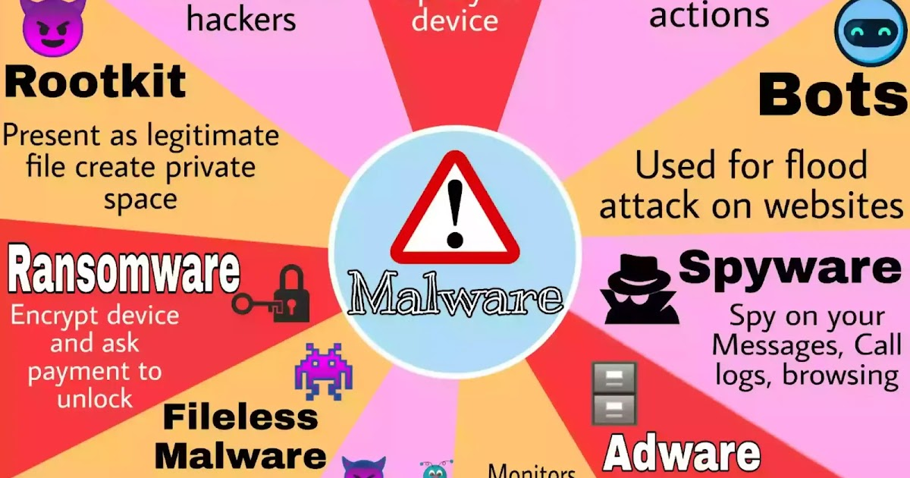
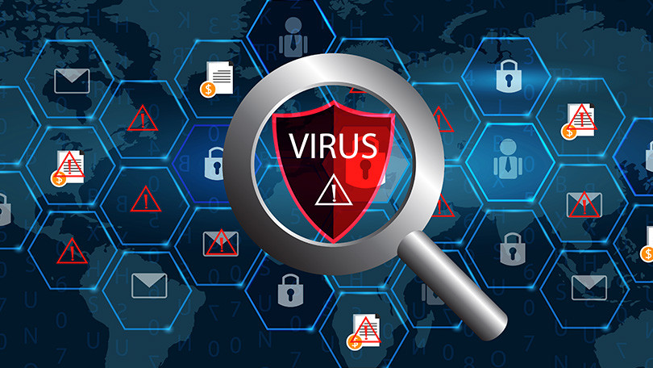

UNDERSTANDING VIRUSES, MALWARE, SPAM, AND ANTIVIRUSES
In our interconnected digital world, cyber threats such as viruses, malware, and spam constantly loom over personal and organizational systems.
VIRUSES
A Computer Virus is a type of malicious software (malware) that attaches itself to a legitimate program or file is executed, the virus spreads by infecting other files and systems.
Viruses can cause various issues, from corrupting files and stealing data to slowing down system performance or damaging hardware.
They often require user interaction (e.g., opening an infectal email attachment or downloading a maliciuos file) to spread.
MALWARE
What Is Malware?
A Malware is a general term for any software specifically designed to disrupt, damage, or gain unauthorized access to a computer system. It includes:
- Viruses: Self-replicating programs that spread.
- Worms: Self-replicating programs that spread without human interaction.
- Trojans: Malicious programs disguised as legitimate software.
- Ransomware: Software that locks a system or file and demands payment for release.
- Spyware: Software designed to secretly monitor a user's activity.
Spam
A Spam refers to unsolicated or unwanted messages, typically sent in bulk via email, instant messaging, or social media platforms.
Email Spam is the most common form, often promoting dubious services or containing links to malware or phishing sites.
spam can also clog email inboxes, making it difficult to find legitimate messages, and sometimes it is used as a tool to distribute viruses and phishing
Antivirus Software
Antivirus software is designed to detect, prevent, and remove viruses and other types of malware from computer system.
Antivirus Program typically scan files, email, and websites for signs of malicious activity, and they can provide real-time protection to prevent infections.
These programs use signature-based detection (matching known virus signatures), heuristic analysis (indentifying suspicious behavior), and behavioral analysis (monitoring actions of running programs) to protect against malware threats.
Popular antivirus software includes brands like Norton, McAfee, Avast, and Bitdefender
Conclusion
These viruses work together in the digital ecosystem, where viruses and malware pose risks to system security, spam contributes to data clutter and cyber threats, and antivirus software acts as a protective barrier.
References:
What Are Computer Viruses
What is Malware
What is Spam
What is Antivirus